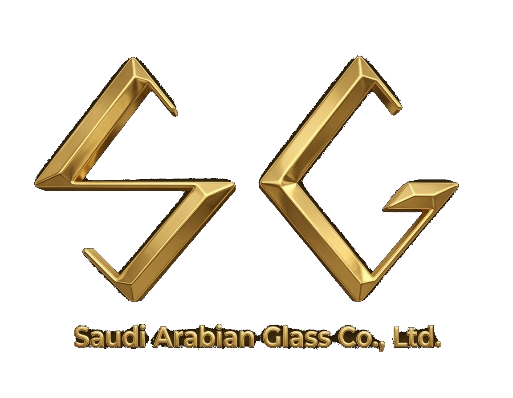

Integrated Management
System Manual
Document Control
Executive Summary — CEO Message
"At SAGCO, we believe that operational excellence, environmental responsibility, and the safety and wellbeing of our people are not competing priorities — they are inseparable foundations of our business. Our Integrated Management System is the framework through which we translate this belief into measurable, auditable performance."
Saudi Arabian Glass Company Ltd. operates five HFO-fired glass furnaces at Jeddah Industrial City Phase 4, manufacturing food-grade glass containers for leading regional customers including Coca-Cola Arabia and Almarai Company. With 884 direct employees and 152 contractors, we are committed to world-class manufacturing standards.
This IMS Manual describes our integrated approach to managing quality, environment, safety, and energy across the full product lifecycle — from raw material receipt through manufacturing, inspection, warehousing, and delivery — in full conformity with ISO 9001:2015, ISO 14001:2026, ISO 45001:2018, and ISO 50001:2018, with TÜV Austria as our independent certification body.
Section 1 — Company Profile & Strategic Context
GHG Intensity Baseline
Section 2 — IMS Scope & Boundaries
Official IMS Scope Statement
The design, manufacture, decoration, warehousing, sale and distribution of food-grade glass containers, operating five HFO-fired glass furnaces at Jeddah Industrial City Phase 4, Saudi Arabia — in conformity with ISO 9001:2015, ISO 14001:2026, ISO 45001:2018, and ISO 50001:2018.
ISO 37001 — referenced as supporting framework; not included in TÜV Austria Stage 2 scope.
Contractor activities — included within IMS scope for OH&S (ISO 45001 §8.1.4); excluded from quality scope.
Section 3 — Document Hierarchy & Coding System
| Level | Format | Example | Description |
|---|---|---|---|
| L1 | L1-IMS-PO-[NN] | L1-IMS-PO-01 | Policies — CEO-approved · ISO Clause 5 anchor |
| L2 | L2-IMS-[Clause]-P-[NN] | L2-IMS-700-P-04 | Procedures · Clause-based coding |
| L3 | L3-IMS-[Ref]-[Type]-[NN] | L3-IMS-800-OC-01 | Work Instructions · OC Specifications |
| L4 | L4-[Ref]-[Type]-[NN] | L4-IMS-621-R-02 | Records · Registers · Forms |
| L5 | External reference | ISO 9001:2015 | External standards · Regulations |
Section 4 — Leadership & IMS Governance
- Strategic IMS oversight across all standards
- Policy, objectives and target approval
- Resource allocation and budgets
- Certification readiness — TÜV Austria
- Management Review governance
- ISO 9001:2015 implementation
- Pack-to-Melt · Customer Satisfaction
- Supplier ASL management
- Heldware KPI monitoring
- ISO 45001 · ISO 14001 · ISO 50001
- HIRA · Legal compliance · HSE training
- GHG · Waste · SHC · EnPI · ECM
- 11 KPIs monitored monthly
- ISO 37001 · ISO 26000 · ISO 20400
- Labour regulations compliance
- CoI · Anti-corruption training
- Supplier ESG · Grievances
Section 5 — Key Business Processes & IMS Integration
Section 6 — KPI Framework & Performance Dashboard
Section 7 — IMS Procedures Index
Section 8 — ISO Clause Cross-Reference Matrix
| Clause | Topic | ISO 9001 | ISO 14001 | ISO 45001 | ISO 50001 | SAGCO Document |
|---|---|---|---|---|---|---|
| §4.1 | Context of Organisation | ✅ | ✅ | ✅ | ✅ | Context RegisterL2-400-P-01 |
| §4.2 | Interested Parties | ✅ | ✅ | ✅ | ✅ | Context Register |
| §4.3 | Scope | ✅ | ✅ | ✅ | ✅ | L4-430-A-01 |
| §4.4 | IMS Processes | ✅ | ✅ | ✅ | ✅ | L2-400-P-01 |
| §5.1 | Leadership Commitment | ✅ | ✅ | ✅ | ✅ | L2-500-P-02Gemba Walks |
| §5.2 | Policy | ✅ | ✅ | ✅ | ✅ | PO-01 to PO-09 |
| §5.3 | Roles & Responsibilities | ✅ | ✅ | ✅ | ✅ | L2-500-P-02 |
| §5.4 | Worker Participation | — | — | ✅ | — | Worker Participation |
| §6.1 | Risks & Opportunities | ✅ | ✅ | ✅ | ✅ | Risk RegisterL2-600-P-03 |
| §6.1.2 | HIRA / Aspects | — | ✅ | ✅ | — | HIRA Register |
| §6.2 | Objectives & KPIs | ✅ | ✅ | ✅ | ✅ | KPI RegisterKPI Hub |
| §7.1 | Resources | ✅ | ✅ | ✅ | ✅ | L2-700-P-04 |
| §7.2 | Competence | ✅ | ✅ | ✅ | ✅ | Training Register |
| §7.5 | Documented Information | ✅ | ✅ | ✅ | ✅ | DMSL2-700-P-04 |
| §8.1 | Operational Control | ✅ | ✅ | ✅ | ✅ | L2-800-P-05OC-01 |
| §9.1 | Monitoring & Measurement | ✅ | ✅ | ✅ | ✅ | KPI HubL2-900-P-06 |
| §9.2 | Internal Audit | ✅ | ✅ | ✅ | ✅ | Audit Programme |
| §9.3 | Management Review | ✅ | ✅ | ✅ | ✅ | MR Register |
| §10.2 | Nonconformity & CAPA | ✅ | ✅ | ✅ | ✅ | CAPA RegisterL2-1000-P-07 |